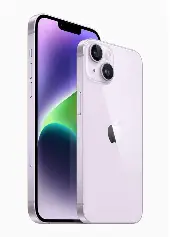

iPhone Series Comparison — From iPhone 14
This table continues from the iPhone 14 family onward (14, 14 Plus, 14 Pro, 14 Pro Max and later), highlighting major changes such as Emergency SOS via satellite, Dynamic Island on Pro models, sensor and computational photography upgrades, and improved battery/runtime.
| MODEL | Name | Description | Application / Notable Use | Camera | Battery |
|---|---|---|---|---|---|
|  | iPhone 14 | Standard model with A15 Bionic chip, 6.1-inch display, dual 12MP cameras. | Everyday use, photography, video recording. | Dual 12MP (Wide and Ultra Wide), Photonic Engine. | Up to 20 hours video playback. |
| iPhone 14 PLUS | Pro model with A16 Bionic chip, 6.1-inch ProMotion display, triple 48MP cameras, Dynamic Island. | Professional photography, videography, high-performance tasks. | Triple 48MP (Wide, Ultra Wide, Telephoto), ProRAW support. | Up to 23 hours video playback. | |
.webp)
| iPhone 15 | Standard model with A16 Bionic chip, 6.1‑inch display featuring Dynamic Island, USB‑C connectivity, and upgraded sensors for improved imaging. | Everyday use, enhanced photography and video with improved computational photography and faster connectivity. | 48MP main (quad‑pixel) sensor, Ultra Wide, Photonic Engine and advanced image processing for better low‑light shots. | Improved battery efficiency for all‑day use; optimizations for longer real‑world runtime. |
|
| iPhone 15 Pro | Pro model with A17 Pro chip, 6.1‑inch ProMotion display, titanium design, USB‑C connectivity, and advanced camera system with telephoto lens. | Professional photography and videography with enhanced performance for gaming and AR applications. | 48MP main (quad‑pixel) sensor, Ultra Wide, 5x telephoto lens, ProRAW support, and advanced computational photography features. | Optimized for extended use with high-performance tasks; improved battery life through efficiency enhancements. |